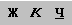

3.3.3 Изменение начертания символов
Выделите текст, который необходимо изменить.
С помощью кнопок  на вкладке
Главная
выберите нужный стиль начертания символов: полужирный, курсив, подчеркивание или их комбинацию.
Назад
|
Содержание
|
Вперед